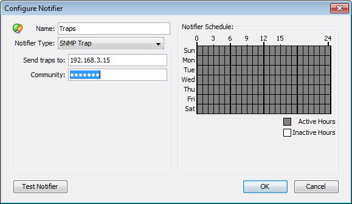

<?xml version="1.0" encoding="utf-8"?>
<html xmlns:MadCap="http://www.madcapsoftware.com/Schemas/MadCap.xsd" MadCap:conditions="Primary.online,Primary.print" MadCap:check_list="Ran Smart Index" MadCap:timeEstimate="0" MadCap:priority="0" MadCap:status="In Progress" MadCap:lastBlockDepth="4" MadCap:lastHeight="859" MadCap:lastWidth="576" MadCap:fileTags="status_tags.No Changes">
    <head><title>Notification by Traps</title>
        <link rel="StyleSheet" href="../../default.css" />
    </head>
    <body>
        <h1 class="L2">
            <MadCap:keyword term="SNMP" />
            <MadCap:keyword term="SNMP Trap" />
            <MadCap:keyword term="Notification" />
            <MadCap:keyword term="TRAP" />Notification by SNMP Trap</h1>
        <p>An <span style="font-style: italic;">SNMP trap</span> is an unsolicited SNMP 
	message that is sent to another device. Traps are sent to convey the data 
	immediately, instead of waiting for that device to be polled at some future 
	time.</p>
        <p>InterMapper sends a SNMP Trap as a notification when a device goes into 
 a particular state.</p>
        <p>
            
        </p>
        <p><i style="font-style: italic;"><MadCap:keyword term="IP" /><MadCap:keyword term="DNS" /><MadCap:keyword term="Enter" /><MadCap:keyword term="Enter:IP Address" /><MadCap:keyword term="Trap Notification Schedule" /><MadCap:keyword term="IP Address" />Configuring a Trap Notifier. Enter the 
 IP Address or DNS name for the device to receive the trap, along with the SNMP 
 Trap Community String.</i>
        </p>
        <p>
            <MadCap:keyword term="Schedule window" />
            <MadCap:keyword term="SNMP Trap Community" />
            <MadCap:keyword term="SNMP Trap Community String" />In the notification Schedule window, select "SNMP Trap" from 
 the dropdown menu, and fill in the IP address or DNS name of the device 
 to receive the trap, and the SNMP Trap Community string.</p>
        <p>InterMapper sends six pieces of information in the trap. <MadCap:keyword term="Dartware:Dartware MIB" /><MadCap:keyword term="OCTET STRING" /><MadCap:keyword term="ASN.1" />All are encoded as OCTET STRING. This information is also available in ASN.1 
	format. in the <a href="dartwaremib.html">Dartware MIB<MadCap:xref href="dartwaremib.html" target="" title="" alt="" MadCap:conditions="Primary.print" /></a>.</p>
        <table>
            <tr>
                <td style="text-align: right;width: 20%;vertical-align: top;" align="right" width="20%"><b style="font-weight: bold;"><MadCap:keyword term="Timestamp" />Timestamp:</b>
                </td>
                <td style="vertical-align: top;">&#160;</td>
                <td style="width: 80%;" width="80%">The current date and time, as a string in the format:<br />&#160;&#160;MM/DD&#160;HH:MM:SS</td>
            </tr>
            <tr>
                <td style="text-align: right;vertical-align: top;" align="right"><b style="font-weight: bold;">Message:</b>
                </td>
                <td style="vertical-align: top;">&#160;</td>
                <td>
                    <MadCap:keyword term="Down" />
                    <MadCap:keyword term="OK" />
                    <MadCap:keyword term="Alarm" />
                    <MadCap:keyword term="WARN" />DOWN, UP, ALARM, WARN, OK, or TRAP (See the <a href="dartwaremib.html">Dartware MIB<MadCap:xref href="dartwaremib.html" target="" title="" alt="" MadCap:conditions="Primary.print" /></a>.)</td>
            </tr>
            <tr>
                <td style="text-align: right;vertical-align: top;" align="right"><b style="font-weight: bold;">Device name:</b>
                </td>
                <td style="vertical-align: top;">&#160;</td>
                <td>The devices DNS name, as a string</td>
            </tr>
            <tr>
                <td style="text-align: right;vertical-align: top;" align="right" valign="top"><b style="font-weight: bold;">Condition:</b>
                </td>
                <td style="vertical-align: top;">&#160;</td>
                <td>The condition of the device, as it would be printed in the log file.</td>
            </tr>
            <tr>
                <td style="font-weight: bold;text-align: right;vertical-align: top;">Device Address:</td>
                <td style="vertical-align: top;">&#160;</td>
                <td>The address of the device the triggered the notifier.</td>
            </tr>
            <tr>
                <td style="font-weight: bold;text-align: right;vertical-align: top;">Probe Type:</td>
                <td style="vertical-align: top;">&#160;</td>
                <td>The type of probe that triggered the notifier</td>
            </tr>
        </table>
        <p>
            <MadCap:keyword term="MIB" />
            <MadCap:keyword term="Developer Guide" />InterMapper's traps contain the following MIB variables, taken from the Dartware 
	MIB (described in detail in <a href="dartwaremib.html">The Dartware MIB<MadCap:xref href="dartwaremib.html" target="" title="" alt="" MadCap:conditions="Primary.print" /></a>):</p><pre class="code"><MadCap:keyword term="IntermapperTimestamp" />intermapperTimestamp = 1.3.6.1.4.1.6306.2.1.1.0<br /><MadCap:keyword term="IntermapperMessage" />intermapperMessage = 1.3.6.1.4.1.6306.2.1.2.0<br /><MadCap:keyword term="IntermapperDeviceName" />intermapperDeviceName = 1.3.6.1.4.1.6306.2.1.3.0<br /><MadCap:keyword term="IntermapperCondition" />intermapperCondition = 1.3.6.1.4.1.6306.2.1.4.0</pre>
        <p>&#160;</p>
    </body>
</html>